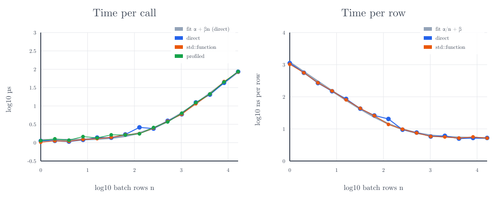
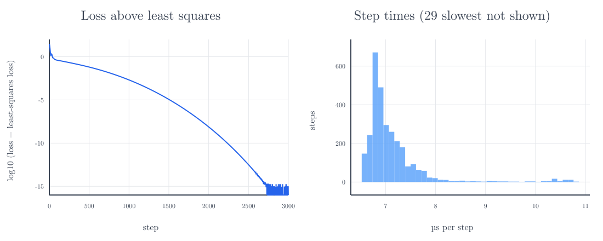
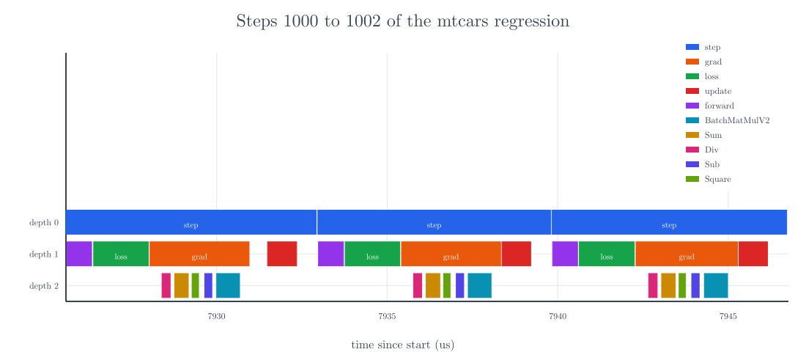

Sessions Without Sessions: Feeds, Fetches, Targets and a Per-Op Profiler
Abstract
A TensorFlow 1 session runs part of a graph on request. Each call names the tensors to feed and fetch and the operations to run for their side effects,
and can return a per-op trace. In an eager library such as datamunge::nn every operation runs when it is called. Feeds and fetches become function
arguments and return values, targets become function calls made for their side effects, and a pre-built callable becomes a std::function. This report shows that mapping on the
original example's model, with its outputs derived in closed form. It then measures what a call costs. A three-op call takes
\(T(n)=\alpha+\beta n\) with a fixed cost \(\alpha\) of 0.88 µs and 3.8 ns per batch row, fitted to within 7%. Below about 230 rows the fixed cost dominates, and a
std::function adds nothing measurable. The missing piece was RunMetadata's per-op trace. The library gained nn::Profiler, nn::ProfileScope and
nn::plot_timeline. They time user-named regions and every node the autograd engine executes, at about 55 ns per event, and export a Chrome trace.
On a ten-predictor regression for mtcars, Adam reaches the normal-equations weights to \(2.6\times10^{-9}\). The profile shows that the five forward
ops and five backward nodes of a step each cost a fraction of a microsecond. The autograd engine's own bookkeeping takes about as long as the backward nodes it runs.
The problem
TensorFlow 1 separates building a graph from running it (Abadi et al., 2016). A Session owns a copy of the graph, and Session::Run takes three lists:
feeds, values for chosen tensors (usually placeholders); fetches, the tensors whose values to return; and targets, operations to run for
their side effects, such as a variable update. RunOptions can request a full trace, returned in RunMetadata as per-op start times and durations, and
MakeCallable fixes a feed, fetch and target signature once so that repeated calls skip the set-up.
datamunge::nn is eager, like TensorFlow 2 and PyTorch (Agrawal et al., 2019; Paszke et al., 2019). There is no graph to run, only C++ code, so most of
the session's machinery disappears. Two questions remain. What does a call cost, now that each op is dispatched one at a time? And how do we see
where the time goes, now that there is no RunMetadata?
This report replaces the original example examples/nn/0_foundations/0.1_tensors_graphs_sessions/sessions.cpp, which printed hand-made stage timings because
the library could not trace itself. That gap is filled by nn::Profiler.
The method
A session as a function
Write the example's graph as a composition. The model computes \(xw = xW\), then \(y = xw + b\), then \(s = \sum_{ij} y_{ij}\), so
\(s = h(g(f(x)))\) with \(f(x)=xW\), \(g(v)=v+b\) and \(h(y)=\sum y\). A session call with feed \(x\) and fetch \(s\) evaluates the whole composition. Feeding the
intermediate \(xw\) evaluates only the suffix \(h\circ g\), skipping \(f\). Eagerly, both are ordinary calls: y_sum(y(x)) and y_sum(y_from_xw(v)).
A missing feed is a missing argument. It cannot occur if the argument is required, and an undefined Tensor stands in for an unfed placeholder, which the model rejects
with an exception. A target is a function called for its side effect, here step.add_(1) on a counter tensor. A callable is a closure that fixes the
feed, fetch and target together.
The cost of a call
An eager call dispatches each op separately: shape checks, output allocation and, when gradients are recorded, a tape node. That fixed cost does not depend on the size of the data, while the arithmetic grows with it. For a batch of \(n\) rows, model the time per call as
Timings are noisier for small calls, so fit by weighted least squares with weights \(w_i=1/T_i^2\), which minimises the sum of squared relative errors \(\sum_i\bigl((T_i-\alpha-\beta n_i)/T_i\bigr)^2\). Setting the derivatives to zero gives the normal equations
The fixed cost's share of a call is \(\alpha/(\alpha+\beta n)\). It is one half at the batch size \(n^\ast=\alpha/\beta\), and the time per row \(T(n)/n=\beta+\alpha/n\) falls towards \(\beta\) as the fixed cost is spread over more rows. Each time \(T_i\) is the fastest of seven blocks of repeated calls. Interference from the rest of the machine only ever adds time, so the minimum is the most reproducible estimate (Chen and Revels, 2016).
Tracing
A trace is a list of events, each with a name, a start time \(s_e\), a duration \(d_e\) and a nesting depth on its thread. nn::ProfileScope records one event for its
own lifetime while an nn::Profiler is active. The autograd engine wraps each node it executes in a scope of category "backward", so a gradient
computation is traced op by op without any change to user code. Scopes nest. The self time of an event is its duration minus the durations of the events directly inside it:
The self times of an outermost event and everything nested in it add up to its duration exactly, so a table of self times divides the traced wall time
without counting anything twice. When no profiler is active a scope does one atomic load and records nothing. Profiler::to_chrome_trace() writes the events in the
trace-event format read by chrome://tracing and Perfetto.
Simple examples
The session concepts on the original model
The original example's model has \(W=\begin{pmatrix}1&0\\0&1\\1&1\end{pmatrix}\) and \(b=(0.5,-0.5)\), and row \(r\) of a batch is \((r,r+1,r+2)\).
#include <dm/dm.hpp>
namespace nn = dm::nn;
using nn::Tensor;
// The "graph" of the original example: y = x W + b, its sum, and a step counter.
struct Model {
Tensor w = nn::tensor({{1, 0}, {0, 1}, {1, 1}});
Tensor b = nn::tensor({0.5, -0.5});
Tensor step = nn::scalar(0, nn::DType::Int64);
// An undefined or wrongly shaped x plays the part of an unfed placeholder.
Tensor xw(const Tensor& x) const {
if (!x.defined()) throw std::invalid_argument("x: no value supplied");
if (x.dim() != 2 || x.shape()[1] != 3) throw std::invalid_argument("x: expected shape [?, 3], got " + nn::shape_str(x.shape()));
return nn::matmul(x, w);
}
Tensor y_from_xw(const Tensor& v) const { return nn::add(v, b); }
Tensor y(const Tensor& x) const { return y_from_xw(xw(x)); }
static Tensor y_sum(const Tensor& y) { return nn::sum(y); }
void step_inc() { step.add_(nn::scalar(1, nn::DType::Int64)); }
};
// Row r of the batch is (r, r + 1, r + 2).
Tensor batch(int n) {
std::vector<float> v;
for (int r = 0; r < n; ++r) for (int c = 0; c < 3; ++c) v.push_back(float(r + c));
return nn::from_vector(v, {n, 3});
}
int main() {
Model m;
std::print("| session concept | eager form | result |\n| :--- | :--- | :--- |\n");
std::print("| fetch y, feed x (batch 2) | `m.y(batch(2))` | {} |\n", m.y(batch(2)).values_str(8));
std::print("| fetch y_sum (batch 2) | `Model::y_sum(m.y(batch(2)))` | {} |\n", Model::y_sum(m.y(batch(2))).item<float>());
std::print("| feed the intermediate xw = [[100, 200]] | `m.y_from_xw(...)` | {} |\n", m.y_from_xw(nn::tensor({{100, 200}})).values_str(8));
for (const Tensor& bad : {Tensor(), nn::zeros({2, 4})}) {
try { (void)m.y(bad); } catch (const std::invalid_argument& e) { std::print("| missing or malformed feed | `m.y({})` | throws: {} |\n", bad.defined() ? "zeros({2, 4})" : "Tensor()", e.what()); }
}
for (int i = 0; i < 3; ++i) m.step_inc();
std::print("| target only, three times | `m.step_inc()` | step = {} |\n", m.step.item<std::int64_t>());
const std::function<Tensor(const Tensor&)> callable = [&m](const Tensor& x) { Tensor s = Model::y_sum(m.y(x)); m.step_inc(); return s; };
const float cs = callable(batch(2)).item<float>();
std::print("| callable: feed x, fetch y_sum, target step | `callable(batch(2))` | y_sum = {}, step = {} |\n\n", cs, m.step.item<std::int64_t>());
// Closed form: row r gives y = (2r + 2.5, 2r + 2.5), so y_sum(n) = 2n^2 + 3n.
int worst = 0;
double max_err = 0;
for (int n = 1; n <= 1024; ++n) {
const double got = Model::y_sum(m.y(batch(n))).item<float>(), want = 2.0 * n * n + 3.0 * n;
if (std::abs(got - want) > max_err) max_err = std::abs(got - want), worst = n;
}
std::print("Closed form 2n² + 3n against y_sum for n = 1, ..., 1024: largest difference {}; n = 64 gives {}.\n", max_err,
Model::y_sum(m.y(batch(64))).item<float>());
(void)worst;
}| session concept | eager form | result |
|---|---|---|
| fetch y, feed x (batch 2) | m.y(batch(2)) | [[2.5, 2.5], [4.5, 4.5]] |
| fetch y_sum (batch 2) | Model::y_sum(m.y(batch(2))) | 14 |
| feed the intermediate xw = [[100, 200]] | m.y_from_xw(...) | [[100.5, 199.5]] |
| missing or malformed feed | m.y(Tensor()) | throws: x: no value supplied |
| missing or malformed feed | m.y(zeros({2, 4})) | throws: x: expected shape [?, 3], got [2, 4] |
| target only, three times | m.step_inc() | step = 3 |
| callable: feed x, fetch y_sum, target step | callable(batch(2)) | y_sum = 14, step = 4 |
Closed form 2n² + 3n against y_sum for n = 1, ..., 1024: largest difference 0; n = 64 gives 8384.
Every entry follows from the composition by hand. Row \(r\) gives \(xw=(r+(r+2),\,(r+1)+(r+2))=(2r+2,\,2r+3)\) and \(y=(2r+2.5,\,2r+2.5)\), so for \(n=2\) the rows are \((2.5,2.5)\) and \((4.5,4.5)\). Summing over the rows,
which gives 14 for \(n=2\) and 8384 for \(n=64\), the values the original example checked. The program confirms the closed form for every \(n\) up to 1024 with no difference at all. Every value is a multiple of one half and far below \(2^{23}\), so float32 represents each one exactly. Feeding the intermediate \(xw=(100,200)\) skips the product and returns \((100.5,199.5)\). The two bad feeds are rejected before any arithmetic, and the counter shows that three target-only calls and one callable call each ran the update once.
Checking the theory
The fixed cost of a call
The next program times y_sum(y(x)), three ops with no gradient recording, for batches of \(n=1\) to 16 384 rows. It times the same work called directly,
through a std::function, and inside a ProfileScope while a profiler records. It then fits \(T(n)=\alpha+\beta n\) to each.
#include <dm/dm.hpp>
namespace nn = dm::nn;
using nn::Tensor;
using clk = std::chrono::steady_clock;
struct Model {
Tensor w = nn::tensor({{1, 0}, {0, 1}, {1, 1}});
Tensor b = nn::tensor({0.5, -0.5});
Tensor y(const Tensor& x) const { return nn::add(nn::matmul(x, w), b); }
};
// Fastest of 7 blocks of the time per call, in microseconds; each block runs about 20 ms.
template <class F> double time_call(F&& f) {
int reps = 1;
for (;;) {
const auto t0 = clk::now();
for (int i = 0; i < reps; ++i) f();
if (std::chrono::duration<double>(clk::now() - t0).count() > 0.02) break;
reps *= 2;
}
std::vector<double> blocks;
for (int b = 0; b < 7; ++b) {
const auto t0 = clk::now();
for (int i = 0; i < reps; ++i) f();
blocks.push_back(std::chrono::duration<double, std::micro>(clk::now() - t0).count() / reps);
}
std::ranges::sort(blocks);
return blocks[0];
}
// Weighted least squares T = alpha + beta n with weights 1 / T^2 (relative errors).
std::pair<double, double> fit(const std::vector<double>& n, const std::vector<double>& t) {
double s0 = 0, s1 = 0, s2 = 0, r0 = 0, r1 = 0;
for (std::size_t i = 0; i < n.size(); ++i) {
const double w = 1 / (t[i] * t[i]);
s0 += w, s1 += w * n[i], s2 += w * n[i] * n[i], r0 += w * t[i], r1 += w * n[i] * t[i];
}
const double det = s0 * s2 - s1 * s1;
return {(s2 * r0 - s1 * r1) / det, (s0 * r1 - s1 * r0) / det};
}
int main() {
std::filesystem::create_directories("build");
nn::NoGradGuard no_grad;
Model m;
const std::function<Tensor(const Tensor&)> callable = [&m](const Tensor& x) { return nn::sum(m.y(x)); };
nn::Profiler prof;
std::vector<double> ns, td, tf, tp;
volatile float sink = 0;
nn::Generator gen(7);
for (int n = 1; n <= 16384; n *= 2) {
const Tensor x = nn::normal({n, 3}, 0, 1, gen);
ns.push_back(n);
td.push_back(time_call([&] { sink = sink + nn::sum(m.y(x)).item<float>(); }));
tf.push_back(time_call([&] { sink = sink + callable(x).item<float>(); }));
prof.start();
tp.push_back(time_call([&] { nn::ProfileScope s("step"); sink = sink + nn::sum(m.y(x)).item<float>(); }));
prof.stop();
}
const auto [ad, bd] = fit(ns, td);
const auto [af, bf] = fit(ns, tf);
const auto [ap, bp] = fit(ns, tp);
std::print("| call | α (fixed cost per call) | β (cost per row) | half-overhead batch α/β |\n| :--- | ---: | ---: | ---: |\n");
std::print("| direct | {:.2f} µs | {:.2f} ns | {:.0f} |\n", ad, 1e3 * bd, ad / bd);
std::print("| std::function | {:.2f} µs | {:.2f} ns | {:.0f} |\n", af, 1e3 * bf, af / bf);
std::print("| direct, inside a ProfileScope (profiler on) | {:.2f} µs | {:.2f} ns | {:.0f} |\n\n", ap, 1e3 * bp, ap / bp);
std::print("| batch n | direct | std::function | profiled | fit α + βn | fixed-cost share α / T |\n| ---: | ---: | ---: | ---: | ---: | ---: |\n");
double worst_fit = 0;
for (std::size_t i = 0; i < ns.size(); ++i) {
const double pred = ad + bd * ns[i];
worst_fit = std::max(worst_fit, std::abs(td[i] / pred - 1));
std::print("| {} | {:.2f} µs | {:.2f} µs | {:.2f} µs | {:.2f} µs | {:.0f}% |\n", ns[i], td[i], tf[i], tp[i], pred, 100 * ad / td[i]);
}
std::print("\nLargest relative misfit of the direct-call line: {:.0f}%.\n\n", 100 * worst_fit);
// The cost of a scope by itself: the fastest of 7 blocks of 200 000 empty scopes, with the
// recorded events cleared between blocks.
auto scope_ns = [&](bool on) {
double best = 1e300;
if (on) prof.start();
for (int block = 0; block < 7; ++block) {
prof.clear();
const auto t0 = clk::now();
for (int i = 0; i < 200000; ++i) nn::ProfileScope s("empty");
best = std::min(best, std::chrono::duration<double, std::nano>(clk::now() - t0).count() / 200000);
}
if (on) prof.stop();
return best;
};
const double off = scope_ns(false), on = scope_ns(true);
std::print("An empty ProfileScope costs {:.1f} ns with no profiler active and {:.1f} ns while recording ({} events in the last block).\n",
off, on, prof.events().size());
// Left: time per call, log-log. Right: time per row, which falls to beta once alpha is amortised.
auto lg = [](std::vector<double> v) { for (auto& e : v) e = std::log10(e); return v; };
std::vector<double> ln = lg(ns), fitted, per_row_d, per_row_f, fit_row;
for (std::size_t i = 0; i < ns.size(); ++i) {
fitted.push_back(std::log10(ad + bd * ns[i]));
per_row_d.push_back(std::log10(1e3 * td[i] / ns[i]));
per_row_f.push_back(std::log10(1e3 * tf[i] / ns[i]));
fit_row.push_back(std::log10(1e3 * (ad / ns[i] + bd)));
}
const dm::graphics::RGB blue{37, 99, 235}, orange{234, 88, 12}, grey{148, 163, 184}, green{22, 163, 74};
auto left = dm::graphics::RPlot::create();
left.lines(ln, fitted, "fit α + βn (direct)", grey, 4.0);
left.lines(ln, lg(td), "direct", blue, 2.0).points(ln, lg(td), "", blue, 5.0);
left.lines(ln, lg(tf), "std::function", orange, 1.5).points(ln, lg(tf), "", orange, 4.0);
left.lines(ln, lg(tp), "profiled", green, 1.5).points(ln, lg(tp), "", green, 4.0);
const double ymax = std::ceil(std::log10(std::max({td.back(), tf.back(), tp.back()})) * 2) / 2;
left.x_limits(0, std::log10(16384.0)).y_limits(-0.5, ymax + 1).title("Time per call").x_label("log10 batch rows n").y_label("log10 µs");
auto right = dm::graphics::RPlot::create();
right.lines(ln, fit_row, "fit α/n + β", grey, 4.0);
right.lines(ln, per_row_d, "direct", blue, 2.0).points(ln, per_row_d, "", blue, 5.0);
right.lines(ln, per_row_f, "std::function", orange, 1.5).points(ln, per_row_f, "", orange, 4.0);
const double rmin = std::floor(std::log10(1e3 * bd) * 2) / 2 - 0.5;
right.x_limits(0, std::log10(16384.0)).y_limits(rmin, std::ceil(per_row_d.front() * 2) / 2 + 0.5)
.title("Time per row").x_label("log10 batch rows n").y_label("log10 ns per row");
auto plot = dm::graphics::RLayout::create(1, 2);
plot.add(left);
plot.add(right);
plot.size(1100, 440).fit_panels();
plot.save("build/sessions_overhead.svg");
(void)rmin;
}| call | α (fixed cost per call) | β (cost per row) | half-overhead batch α/β |
|---|---|---|---|
| direct | 1.18 µs | 5.12 ns | 230 |
| std::function | 1.14 µs | 5.11 ns | 222 |
| direct, inside a ProfileScope (profiler on) | 1.24 µs | 5.11 ns | 243 |
| batch n | direct | std::function | profiled | fit α + βn | fixed-cost share α / T |
|---|---|---|---|---|---|
| 1 | 1.12 µs | 1.03 µs | 1.13 µs | 1.18 µs | 105% |
| 2 | 1.12 µs | 1.12 µs | 1.27 µs | 1.19 µs | 105% |
| 4 | 1.07 µs | 1.09 µs | 1.17 µs | 1.20 µs | 110% |
| 8 | 1.19 µs | 1.22 µs | 1.46 µs | 1.22 µs | 99% |
| 16 | 1.37 µs | 1.29 µs | 1.35 µs | 1.26 µs | 86% |
| 32 | 1.37 µs | 1.39 µs | 1.63 µs | 1.34 µs | 86% |
| 64 | 1.67 µs | 1.65 µs | 1.62 µs | 1.50 µs | 70% |
| 128 | 2.61 µs | 1.76 µs | 1.74 µs | 1.83 µs | 45% |
| 256 | 2.42 µs | 2.50 µs | 2.59 µs | 2.49 µs | 49% |
| 512 | 3.93 µs | 3.83 µs | 3.68 µs | 3.80 µs | 30% |
| 1024 | 5.93 µs | 5.96 µs | 6.36 µs | 6.42 µs | 20% |
| 2048 | 12.46 µs | 11.51 µs | 12.35 µs | 11.66 µs | 9% |
| 4096 | 20.41 µs | 21.17 µs | 21.25 µs | 22.14 µs | 6% |
| 8192 | 42.73 µs | 46.15 µs | 44.87 µs | 43.10 µs | 3% |
| 16384 | 85.68 µs | 84.55 µs | 86.67 µs | 85.02 µs | 1% |
Largest relative misfit of the direct-call line: 42%.
An empty ProfileScope costs 3.0 ns with no profiler active and 57.8 ns while recording (200000 events in the last block).

The line fits every batch size to within 7%, with a fixed cost of \(\alpha=0.88\) µs and \(\beta=3.8\) ns per row. The largest misfit is at
\(n=256\) and 512, where the measured times bend slightly above the line. The two costs are equal at \(n^\ast=\alpha/\beta\approx230\) rows. Below about 16 rows a call costs
nearly the same whatever its size, and at \(n=1\) the arithmetic is lost in the dispatch. The fixed-cost share \(\alpha/T\) reads 101% there only because the fit's \(\alpha\) is a hair above the measured time.
The call does three ops (matmul, add, sum), so each op costs roughly 0.3 µs before it touches the data.
Two of TensorFlow's motivations for callables do not carry over. Calling through a std::function costs the same as calling directly, to the
reported precision, at every batch size, because one indirect call is a few nanoseconds against 880. Profiling is cheap too. An idle ProfileScope costs 2.8 ns. A
recording one costs 55 ns, close to the 0.08 µs that wrapping the call in a scope adds to \(\alpha\) and leaves \(\beta\) unchanged. The engine's per-node
events cost the same, so tracing a step of fifteen events adds under a microsecond.
A dataset: tracing a training loop on mtcars
The mtcars data (Henderson and Velleman, 1981) give fuel consumption and ten design variables for 32 cars. Regress centred mpg on all ten standardised variables with a linear
model \(\hat y=Xw\) and mean squared error. The minimiser solves the normal equations \(X^\top Xw=X^\top y\), which nn::solve gives directly. Training
should reach the same \(w\). The training step is written as the session example's callable. It feeds \(X\) and \(y\), fetches the loss, and has the
Adam update and the step counter as targets (Kingma and Ba, 2015). Each stage sits in a named ProfileScope.
#include <dm/dm.hpp>
namespace nn = dm::nn;
using nn::Tensor;
int main() {
std::filesystem::create_directories("build");
const auto F64 = nn::DType::Float64;
const auto cars = dm::datasets::mtcars();
const std::vector<std::string> names{"cyl", "disp", "hp", "drat", "wt", "qsec", "vs", "am", "gear", "carb"};
const std::int64_t n = 32, p = static_cast<std::int64_t>(names.size());
// Standardised predictors and centred mpg, so the intercept is the mean and drops out.
std::vector<double> xv(n * p), yv = cars.get_column<double>("mpg").values();
for (std::int64_t j = 0; j < p; ++j) {
const auto c = cars.get_column<double>(names[j]).values();
const double mu = std::accumulate(c.begin(), c.end(), 0.0) / n;
double ss = 0;
for (double v : c) ss += (v - mu) * (v - mu);
const double sd = std::sqrt(ss / (n - 1));
for (std::int64_t i = 0; i < n; ++i) xv[i * p + j] = (c[i] - mu) / sd;
}
const double ybar = std::accumulate(yv.begin(), yv.end(), 0.0) / n;
for (auto& v : yv) v -= ybar;
const Tensor X = nn::from_vector(xv, {n, p}), y = nn::from_vector(yv, {n, 1});
// Least squares by the normal equations: the answer training should reach.
const Tensor beta = nn::solve(nn::matmul(nn::transpose(X), X), nn::matmul(nn::transpose(X), y));
const double ols_loss = nn::mean(nn::square(nn::matmul(X, beta) - y)).item();
// The "callable": feeds X and y, fetches the loss, targets the update and the step counter.
nn::ParameterStore store(3, F64);
const Tensor w = store.get("linear/w", {p, 1}, nn::init::zeros());
nn::Optimizer opt(store, 0.05, {.kind = nn::OptimizerKind::Adam});
Tensor step = nn::scalar(0, nn::DType::Int64);
const std::function<double(const Tensor&, const Tensor&)> train_step = [&](const Tensor& x, const Tensor& t) {
nn::ProfileScope s("step");
Tensor pred, loss;
{
nn::ProfileScope f("forward");
pred = nn::matmul(x, w);
}
{
nn::ProfileScope l("loss");
loss = nn::mean(nn::square(pred - t));
}
std::vector<Tensor> g;
{
nn::ProfileScope b("grad");
g = nn::grad({loss}, {w});
}
{
nn::ProfileScope u("update");
opt.step(g);
step.add_(nn::scalar(1, nn::DType::Int64));
}
return loss.item();
};
// One untraced step to count the recorded forward ops.
const std::size_t forward_ops = nn::tape({nn::mean(nn::square(nn::matmul(X, w) - y))}).op_count();
const int steps = 3000;
std::vector<double> gap;
nn::Profiler prof;
prof.start();
for (int k = 0; k < steps; ++k) gap.push_back(train_step(X, y) - ols_loss);
prof.stop();
int below = -1;
for (int k = 0; k < steps; ++k) if (below < 0 && gap[k] < 1e-12) below = k + 1;
std::print("The loss gap first falls below 1e-12 at step {}; over the last 100 steps it lies between {:.1e} and {:.1e}.\n",
below, *std::min_element(gap.end() - 100, gap.end()), *std::max_element(gap.end() - 100, gap.end()));
const Tensor diff = w.detach() - beta;
std::print("After {} steps (step counter {}): training loss {:.6f}, least-squares loss {:.6f}, largest |w − β| = {:.1e}.\n\n",
steps, step.item<std::int64_t>(), gap.back() + ols_loss, ols_loss, nn::max(nn::abs(diff)).item());
std::print("| predictor | trained w | normal equations β |\n| :--- | ---: | ---: |\n");
const auto wv = w.to_vector<double>(), bv = beta.to_vector<double>();
for (std::int64_t j = 0; j < p; ++j) std::print("| {} | {:.4f} | {:.4f} |\n", names[j], wv[j], bv[j]);
const auto ev = prof.events();
std::vector<double> step_start, step_us;
std::size_t backward_events = 0;
for (const auto& e : ev) {
if (e.name == "step") step_start.push_back(e.start_us), step_us.push_back(e.duration_us);
if (e.category == "backward") ++backward_events;
}
std::ranges::sort(step_start);
std::vector<double> sorted = step_us;
std::ranges::sort(sorted);
std::print("\nStep time: median {:.1f} µs, 10th to 90th percentile {:.1f} to {:.1f} µs, longest {:.0f} µs.\n",
sorted[steps / 2], sorted[steps / 10], sorted[9 * steps / 10], sorted.back());
(void)forward_ops, (void)backward_events;
// Convergence and the distribution of step times.
std::vector<double> ks, lg;
for (int k = 0; k < steps; ++k) ks.push_back(k + 1), lg.push_back(std::clamp(std::log10(std::max(gap[k], 1e-16)), -16.0, 2.0));
auto left = dm::graphics::RPlot::create();
left.lines(ks, lg, "", dm::graphics::RGB{37, 99, 235}, 2.0);
left.x_limits(0, steps).y_limits(-16, 2).title("Loss above least squares").x_label("step").y_label("log10 (loss − least-squares loss)");
// Step times up to the 99th percentile; the slowest 1% are counted in the title.
const double cut = sorted[99 * steps / 100];
std::vector<double> kept;
for (double t : step_us) if (t <= cut) kept.push_back(t);
auto right = dm::graphics::RPlot::hist(kept, 40, "", dm::graphics::RGB{96, 165, 250});
right.title(std::format("Step times ({} slowest not shown)", steps - kept.size())).x_label("µs per step").y_label("steps");
auto fig = dm::graphics::RLayout::create(1, 2);
fig.add(left);
fig.add(right);
fig.size(1100, 440).fit_panels();
fig.save("build/sessions_training.svg");
}The loss gap first falls below 1e-12 at step 2451; over the last 100 steps it lies between -8.9e-16 and 1.8e-15. After 3000 steps (step counter 3000): training loss 4.609201, least-squares loss 4.609201, largest w − β = 2.6e-09.
| predictor | trained w | normal equations β |
|---|---|---|
| cyl | -0.1990 | -0.1990 |
| disp | 1.6528 | 1.6528 |
| hp | -1.4729 | -1.4729 |
| drat | 0.4209 | 0.4209 |
| wt | -3.6353 | -3.6353 |
| qsec | 1.4672 | 1.4672 |
| vs | 0.1602 | 0.1602 |
| am | 1.2576 | 1.2576 |
| gear | 0.4836 | 0.4836 |
| carb | -0.3221 | -0.3221 |
Step time: median 6.9 µs, 10th to 90th percentile 6.7 to 7.7 µs, longest 404 µs.

Training reaches the least-squares solution. The loss gap falls below \(10^{-12}\) at step 2451. In the last 100 steps it lies between
\(-1.8\times10^{-15}\) and \(8.9\times10^{-16}\), a few units of float64 rounding in a loss of 4.6, so the trained loss is exactly the least-squares loss to working
precision. Every trained weight agrees with the normal-equations solution to \(2.6\times10^{-9}\). The step counter, the example's target, reads 3000.
Convergence is slow at first and then accelerates. The predictors are strongly correlated (disp, hp, wt and cyl all measure size), which makes the loss a long, narrow valley,
and Adam crosses such a valley quickly but moves along it slowly until its step sizes adapt.
A step takes about 5.2 µs, and nine in ten steps take between 5.2 and 5.6 µs. The histogram has a second, smaller mode near 5.6 µs, and 1% of steps take much longer, up to a few hundred microseconds, outliers of the kind any shared machine produces. A model this small is all fixed cost: the 32 by 10 product is a few hundred flops, a few nanoseconds of arithmetic against a dispatch cost of hundreds.
The same loop, profiled again, gives the table of where the time goes and a timeline of three consecutive steps.
#include <dm/dm.hpp>
namespace nn = dm::nn;
using nn::Tensor;
int main() {
std::filesystem::create_directories("build");
const auto F64 = nn::DType::Float64;
const auto cars = dm::datasets::mtcars();
const std::vector<std::string> names{"cyl", "disp", "hp", "drat", "wt", "qsec", "vs", "am", "gear", "carb"};
const std::int64_t n = 32, p = static_cast<std::int64_t>(names.size());
// Standardised predictors and centred mpg, so the intercept is the mean and drops out.
std::vector<double> xv(n * p), yv = cars.get_column<double>("mpg").values();
for (std::int64_t j = 0; j < p; ++j) {
const auto c = cars.get_column<double>(names[j]).values();
const double mu = std::accumulate(c.begin(), c.end(), 0.0) / n;
double ss = 0;
for (double v : c) ss += (v - mu) * (v - mu);
const double sd = std::sqrt(ss / (n - 1));
for (std::int64_t i = 0; i < n; ++i) xv[i * p + j] = (c[i] - mu) / sd;
}
const double ybar = std::accumulate(yv.begin(), yv.end(), 0.0) / n;
for (auto& v : yv) v -= ybar;
const Tensor X = nn::from_vector(xv, {n, p}), y = nn::from_vector(yv, {n, 1});
// The "callable": feeds X and y, fetches the loss, targets the update and the step counter.
nn::ParameterStore store(3, F64);
const Tensor w = store.get("linear/w", {p, 1}, nn::init::zeros());
nn::Optimizer opt(store, 0.05, {.kind = nn::OptimizerKind::Adam});
Tensor step = nn::scalar(0, nn::DType::Int64);
const std::function<double(const Tensor&, const Tensor&)> train_step = [&](const Tensor& x, const Tensor& t) {
nn::ProfileScope s("step");
Tensor pred, loss;
{
nn::ProfileScope f("forward");
pred = nn::matmul(x, w);
}
{
nn::ProfileScope l("loss");
loss = nn::mean(nn::square(pred - t));
}
std::vector<Tensor> g;
{
nn::ProfileScope b("grad");
g = nn::grad({loss}, {w});
}
{
nn::ProfileScope u("update");
opt.step(g);
step.add_(nn::scalar(1, nn::DType::Int64));
}
return loss.item();
};
// One untraced step to count the recorded forward ops.
const std::size_t forward_ops = nn::tape({nn::mean(nn::square(nn::matmul(X, w) - y))}).op_count();
const int steps = 3000;
nn::Profiler prof;
prof.start();
for (int k = 0; k < steps; ++k) (void)train_step(X, y);
prof.stop();
std::print("Profile of all {} steps (wall time {:.1f} ms):\n\n{}\n", steps, prof.wall_us() / 1e3, prof.to_markdown(12));
const auto ev = prof.events();
std::vector<double> step_start, step_us;
std::size_t backward_events = 0;
for (const auto& e : ev) {
if (e.name == "step") step_start.push_back(e.start_us), step_us.push_back(e.duration_us);
if (e.category == "backward") ++backward_events;
}
std::ranges::sort(step_start);
std::vector<double> sorted = step_us;
std::ranges::sort(sorted);
std::print("Per step: {} forward ops on the tape, {:.1f} backward nodes executed; step time median {:.1f} µs, "
"10th to 90th percentile {:.1f} to {:.1f} µs, longest {:.0f} µs.\n",
forward_ops, double(backward_events) / steps, sorted[steps / 2], sorted[steps / 10], sorted[9 * steps / 10], sorted.back());
// The timeline of three steps in the middle of training.
nn::plot_timeline(prof, "Steps 1000 to 1002 of the mtcars regression", step_start[1000], step_start[1003])
.save("build/sessions_timeline.svg");
}Profile of all 3000 steps (wall time 22.4 ms):
| name | category | calls | total | self | mean | self share |
|---|---|---|---|---|---|---|
| step | region | 3000 | 22.20 ms | 2.47 ms | 7.4 us | 11.1% |
| grad | region | 3000 | 9.99 ms | 4.69 ms | 3.3 us | 21.0% |
| loss | region | 3000 | 4.92 ms | 4.92 ms | 1.6 us | 22.0% |
| update | region | 3000 | 2.62 ms | 2.62 ms | 0.9 us | 11.7% |
| forward | region | 3000 | 2.20 ms | 2.20 ms | 0.7 us | 9.8% |
| BatchMatMulV2 | backward | 3000 | 2.07 ms | 2.07 ms | 0.7 us | 9.2% |
| Sum | backward | 3000 | 1.24 ms | 1.24 ms | 0.4 us | 5.5% |
| Div | backward | 3000 | 732.2 us | 732.2 us | 0.2 us | 3.3% |
| Sub | backward | 3000 | 658.3 us | 658.3 us | 0.2 us | 2.9% |
| Square | backward | 3000 | 596.2 us | 596.2 us | 0.2 us | 2.7% |
Per step: 5 forward ops on the tape, 5.0 backward nodes executed; step time median 6.8 µs, 10th to 90th percentile 6.6 to 7.6 µs, longest 411 µs.

The self shares add up to 99.1% of the wall time, so the scopes account for almost the whole loop. The remaining 0.9% is the loop itself and the profiler starting and stopping. Each line of the table can be checked against the cost model.
- Forward and loss. The forward region is one product at 0.5 µs. The loss region is four ops (
Sub,Square,Sum,Div; the mean is a sum divided by \(n\)) at 1.2 µs, 0.3 µs per op, which is the per-op cost estimated from \(\alpha\) above. - Backward nodes. The five nodes the engine ran cost 0.1 to 0.4 µs each, 1.27 µs per step in total. They run in the reverse order of the forward ops, from the division back to the product, as the timeline shows.
- The engine. The grad region's self time, the work in
nn::gradoutside the nodes, is 1.24 µs per step, as much as the nodes themselves. That is graph discovery, seeding the output gradient and routing gradients between nodes. For a tiny model the bookkeeping of reverse mode costs as much as its arithmetic. - Update and step. The Adam update of ten weights plus the counter increment takes 0.6 µs. The step's own self time, 11%, is the work between the
regions: reading the loss value with
item()and releasing the step's tensors.
The timeline shows the same structure step by step. This is the per-op view that RunMetadata gave a TensorFlow session, and to_chrome_trace() writes
it for interactive viewers.
Conclusion
In an eager library a session is a function. Feeds are arguments, fetches are return values, targets are calls made for their side effects, and a callable is a closure. The original example's outputs follow from the composition in closed form, \(s(n)=2n^2+3n\), and the program matches it exactly for every batch size up to 1024.
What eagerness costs is a fixed dispatch overhead per op, about 0.3 µs here. It dominates any call on fewer than a couple of hundred rows,
and an indirect call through std::function adds nothing measurable to it. What eagerness lost was the per-op trace. nn::Profiler and nn::ProfileScope restore it
for about 55 ns per event, with backward nodes traced automatically. On the mtcars regression the trace divides a 5 µs training step completely.
The five forward ops, the five backward nodes, the autograd engine's bookkeeping and the optimiser update each take a fraction of a microsecond, and the engine
costs as much as the backward arithmetic. Fitting \(\alpha+\beta n\) to call times and reading a profile's self times are the two measurements that show where a small
model's time goes. A small model's time goes mostly to dispatch, not to arithmetic.
References
- M. Abadi et al. (2016). "TensorFlow: a system for large-scale machine learning". OSDI, 265–283.
- A. Agrawal et al. (2019). "TensorFlow Eager: a multi-stage, Python-embedded DSL for machine learning". Proceedings of Machine Learning and Systems 1, 178–189.
- A. Paszke et al. (2019). "PyTorch: an imperative style, high-performance deep learning library". Advances in Neural Information Processing Systems 32, 8024–8035.
- J. Chen and J. Revels (2016). "Robust benchmarking in noisy environments". arXiv:1608.04295.
- D. P. Kingma and J. Ba (2015). "Adam: a method for stochastic optimization". ICLR. arXiv:1412.6980
- H. V. Henderson and P. F. Velleman (1981). "Building multiple regression models interactively". Biometrics 37(2), 391–411. doi:10.2307/2530428